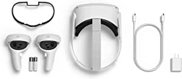
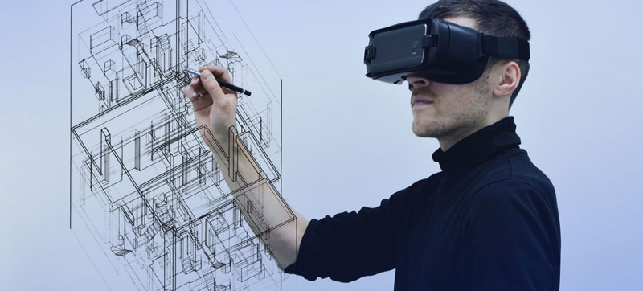

.jpg)
¿Que son las gafas de realidad virtual?

Las gafas de realidad virtual es probablemente el dispositivo actual más utilizado y accesible en cuanto a la tecnología basada en la realidad virtual.
La realidad virtual es un entorno de escenas y objetos de apariencia real, generada mediante tecnología informática, que permite al usuario experimentar una inmersión en él. Esta tecnología nos permite a los usuarios introducirnos en los videojuegos como si fueramos parte real de él, mejorar calidades en los entrenamientos deportivos o ayudar al avance científico en algunas áreas, sobre todo en la de las operaciones…
¿Qué elementos componen unas gafas de realidad virtual?
En general, este dispositivo en cuanto a hardware es muy parecido a sus homologas en cuanto a tecnologías que permiten al usuario interactuar con un entorno:
- Procesador.
- Software que gestione todo el proceso.
- Display: Elemento que permite mostrar el escenario con el que el usuario va a interactuar.
- Sensores: Elementos que obtendrán información para el sistema.
- Actuadores: Elementos que mandan comandos al sistema. (periféricos).
Pero la realidad virtual va un paso más allá en cuanto a la inmersión del usuario se refiere, por ello los dispositivos utilizados deben aislar completamente del mundo real y simular que lo que ven y escuchan es su realidad en ese período de tiempo.
Estos elementos pueden ser, cascos de rv, carcasas para mantallas móviles o periféricos de videojuegos.
¿En que sectores se puede implementar el uso de este dispotivo?
Esta tecnología aun es muy nueva y seguramente no este desarrollada,ni exprimida un 20% en comparación con los usos que se le podrá dar en el futuro, pero, aun asi ya son varios los sectores que estan comenzando a utilizar dicha tecnología para mejorar sus resultados.
Estas son las utilidades que se les da a este dispotivo actualmente:
- Jugar a videojuegos: Por el momento, es el sector más enfocado a las gafas, donde cada año más y más jugadores de todo el mundo comienzan a probarlas, siendo este, probablemente, el nuevo sistemas de juego del futuro sin ninguna duda.
- Ver películas: Ofrece una mayor inmersión en la película, recreando una mayor experiencia aislando al usuario del mundo exterior.
- Educación, exploración creativa: La interacción con objetos virtuales, esta dando grandes resultado en el mundo de la biología y la física, creando cada vez más material y más usos.
- Desarrollo del aprendizaje espacial.
- Entrenamiento profesional: Varios profesiones, sobre todo algunas de riesgo, comienzan a usar este hardware para poder recrear situaciones del mundo real, pero que no conllevan ningun tipo de riesgo para el usuario.
Fines terapeúticos: Hace años, se comenzó a implementar en el mundo psicológico, siendo el campo de las fobias el más beneficiado.
Más información
Conoce como funciona por dentro una gada de realidad virtual.Mejores gafas de VR de la actualidad.